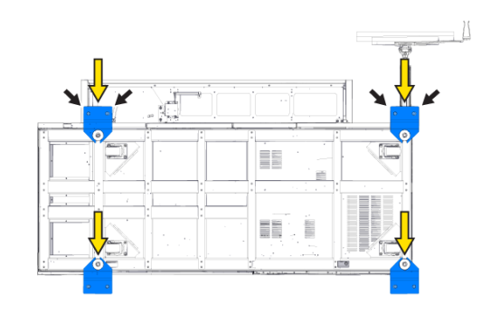
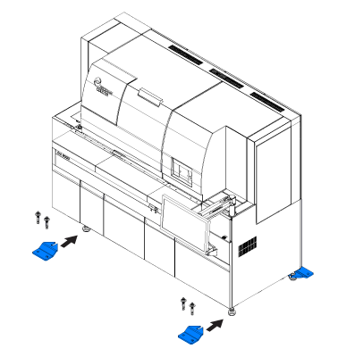
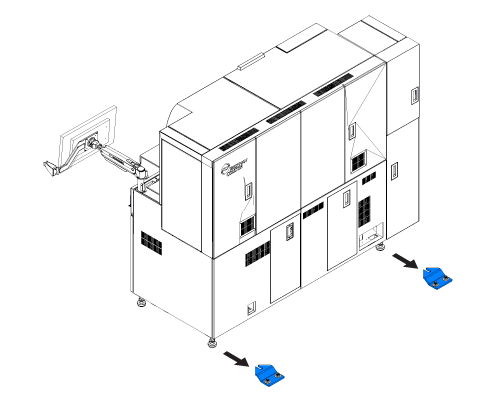

Refer to the documents above for DxI 9000 seismic mounting and seismic brackets.
There are two configurations for seismic mounting based on the type of floor the instrument will be on.
Installing the Seismic Kit
Refer to the mounting configuration on pages 4 and 5 of the DxI 9000 Certification.
Mounting Choices
The seismic engineer has determined that this product must be bolted to secure floor braces using all four corners.
Figure 39: Bottom view of the DxI 9000 and floor braces.
Below is an image of the four corners needed to secure the floor braces.

Customer Laboratory or Seismic Engineer Responsibilities
Determine the mounting configuration by using the DxI 9000 Seismic Certification that is attached above. The mounting configurations are concrete slab, or concrete slab on metal deck.
Follow the fastener specifications in the certification exactly as prescribed.
Measure the location of the DxI 9000 before securing braces on floor. The contractor or Building Supervisor Engineer of Record will be installing the braces to the floor. The Beckman Coulter service technician must bolt the instrument to the braces that have been attached to the floor.
Figure 40: Front view of the DxI 9000.
Below is an illustration of the braces attached to the floor. The DxI 9000 should slide into the braces. Once secured in the braces the instrument can be bolted down.

Figure 41: Rear View of the DxI 9000.
Below is an illustration of the rear view of the DxI 9000. The instrument will be moved into the braces then bolted down.

Figure 42: Bracket With Bolts.
Below is a close up illustration of the DxI 9000 secured in the brace with two bolts.